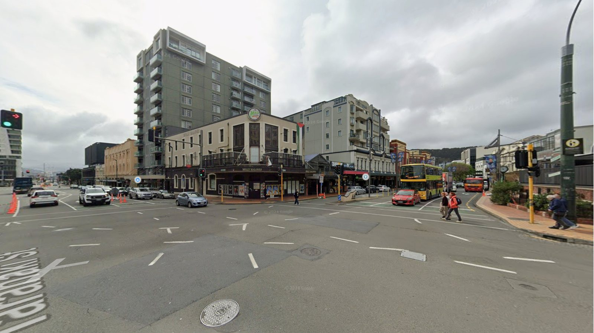
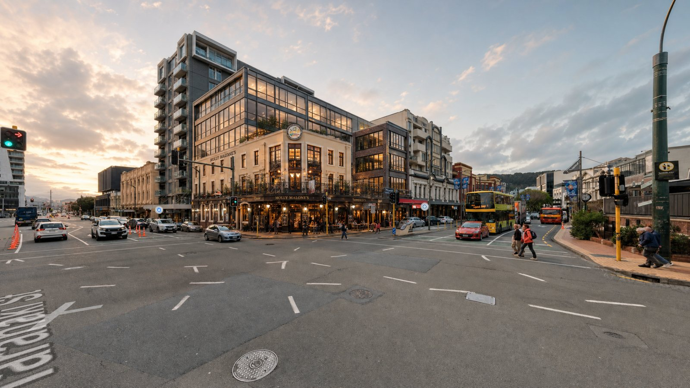
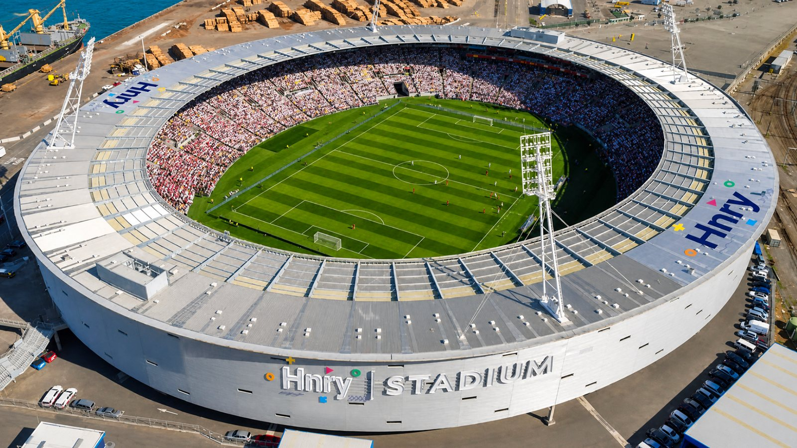
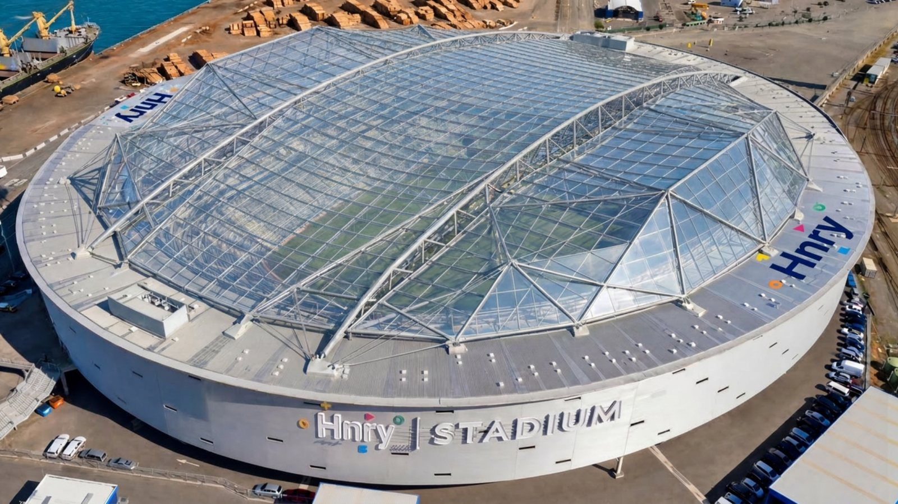
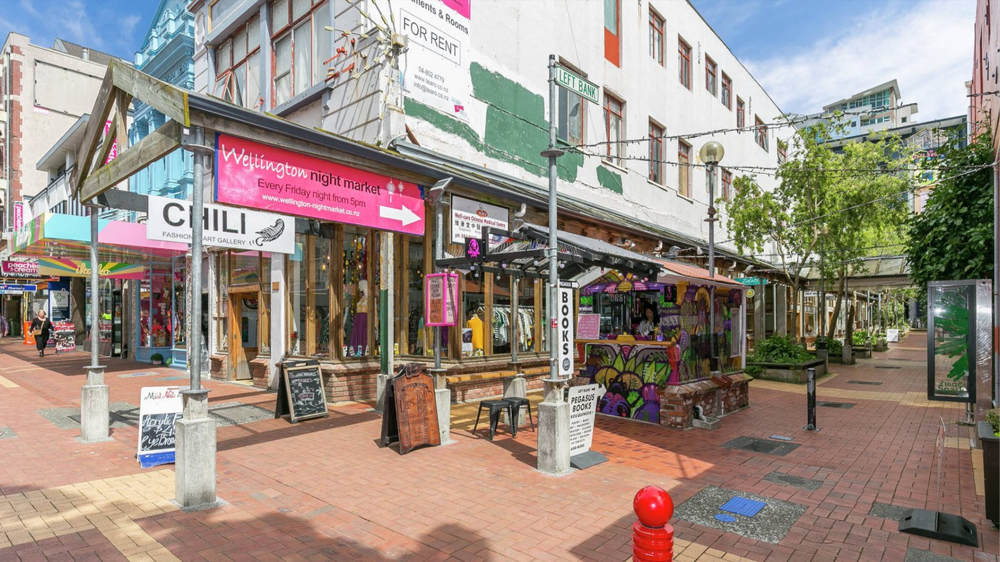
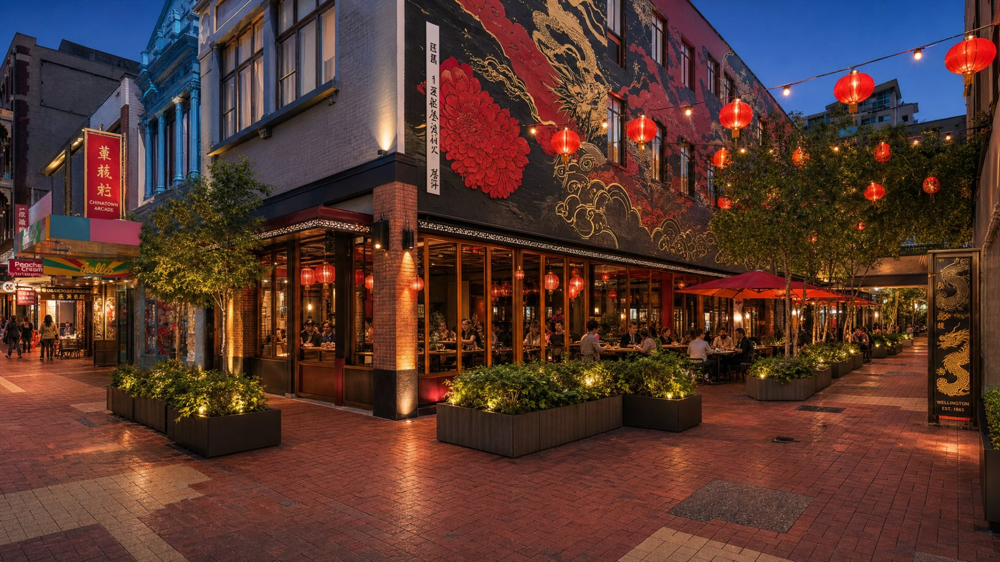

Kia ora. Welcome to Te Whanganui-a-Tara, reimagined.
Wellington is a city that reacts. ReThinkWelly is here to help make it one that leads. We take underutilised spaces across the city and reimagine what they could become to inspire the council, challenge developers, and start conversations.
Dream a little. #ReThinkWelly
We prompt and showcase opportunities hiding in plain sight.
ReThinkWelly is an urban futures initiative reimagining the potential of Aotearoa's capital city. We identify underutilised public spaces, laneways, and vacant sites across the city, using architectural visualisation to demonstrate what they could become.
Our work bridges the gap between community imagination and urban development. By providing bold design concepts and visualising tactical urbanism, we start meaningful conversations with the Council, developers, and residents to build a more vibrant, walkable, and sustainable capital.
Stop accepting Wellington as it is. Start imagining what it could be.
We identify underutilised or neglected spaces across the city, then use architectural visualisation to demonstrate what they could become. The results get shared publicly, for people to react to, build on, and push further.
An empty section on a busy street. A carpark where a laneway could be. A building crying out for something new. If you see an opportunity Wellington is wasting, point us in the right direction.
We use architectural visualisation to bypass the $50k brief and government red tape. We render bold, specific designs grounded in the real fabric and character of Te Whanganui-a-Tara.
The vision goes public here and on social media, out into the world for the city to react to, debate, and take further. No council approval needed, just a simple question: what could this space actually be?
The vision keeps growing. Here is what we are building toward.
Street interviews capturing actual community opinions and raw, local ideas.
Visual analyses, case studies, and stories from new urban builds across Wellington.
A public blog hosting design submissions and creative pieces from Wellingtonians.
Future community-funded and community-led micro-interventions to bring temporary installations to life.
Active pathways for local developers, planners, creatives, and businesses to co-create these visions.
Real spaces. Real streets. Real opportunities our city has not seized, yet. Every image starts with a photograph and a question. Drag to reveal the answer.


BeforeAfterIs this what you want to see on your commute?


BeforeAfterWhat events would you want to see here?


BeforeAfterWhat should Wellington make room for next?
Reimagining Te Whanganui-a-Tara through the lens of our community. We showcase opportunities hiding in plain sight. Share your ideas and DM to be featured.
JOIN THE WAKA. Share your ideas. Follow along at @rethinkwelly.
The waka is moving, and everyone is welcome on board. We want to connect with anyone passionate about a more livable capital. Find your role below and help us challenge the status quo.
You walk past these spaces every day. Share your ideas: you do not need a grand vision, just point us toward a site that deserves better.
Bring your skills, your imagination, and your boldest design concepts to help us make the future of Wellington visible.
Foot traffic follows beauty. Partner with us to see what iconic, people-first development could unlock for your neighbourhood.
Let us help you start the conversation early. Use our community-driven concepts to build public momentum for bolder planning decisions.
The waka is moving. Tell us who you are, and let's reshape Wellington together.